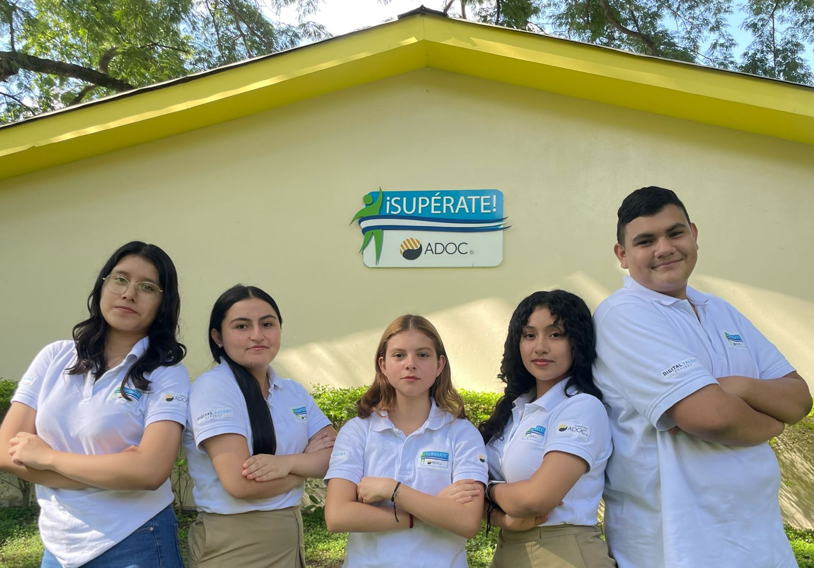
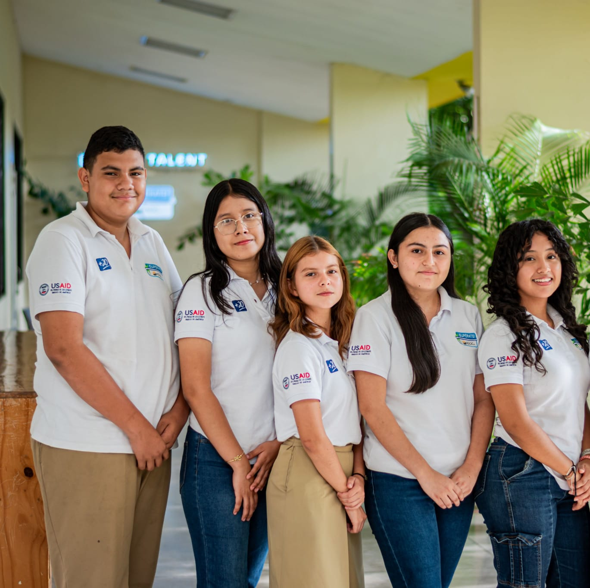
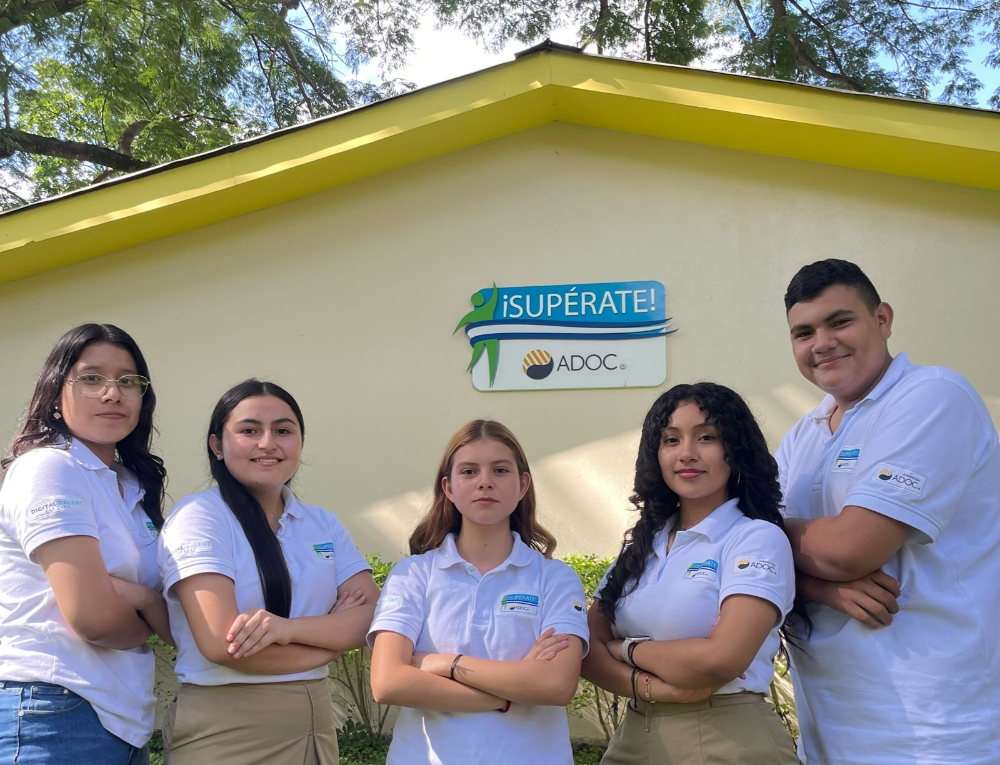
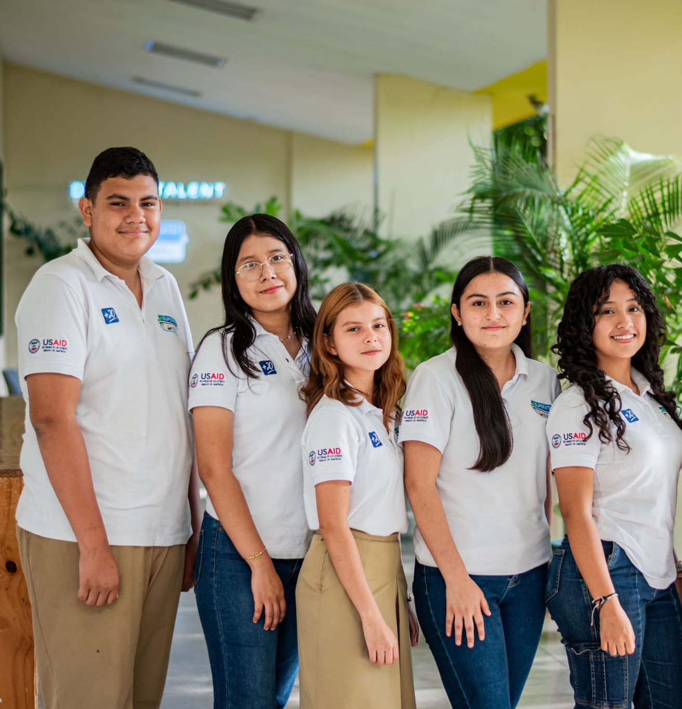

adopt with your heart




Somos un sitio web diseñado para conectar a refugios de El Salvador con personas interesadas en adoptar perros y gatos. Nuestro objetivo es facilitar la adopción responsable y ofrecerles a las mascotas una segunda oportunidad de tener un hogar lleno de amor.
"Conectar corazones y patas: Facilitamos la adopción responsable de perros y gatos en refugios de El Salvador, brindando una segunda oportunidad a miles de mascotas."
"Ser la plataforma líder en El Salvador en adopción de mascotas, creando un país donde cada perro y gato tenga la oportunidad de vivir en un hogar lleno de amor, respeto y cuidados."